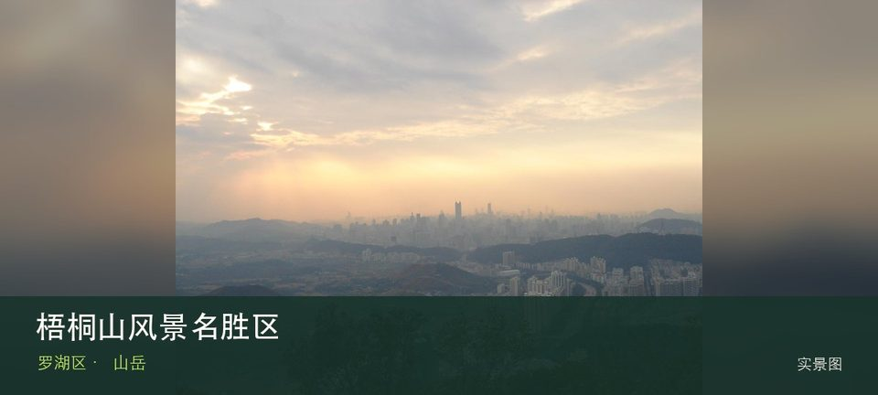
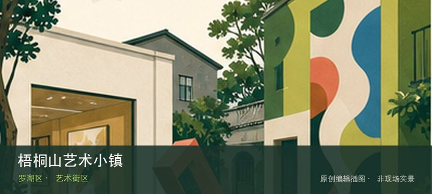

适合谁
适合有稳定登山经验、能按预警折返的人；初学者、儿童和长者应选择短线并避免冲顶目标。

SHENZHEN GUIDE · 037
罗湖、盐田、龙岗交界｜常用罗湖侧入口罗沙路 2076 号 · 山岳
梧桐山风景名胜区横跨罗湖、盐田、龙岗三区，深圳最高峰大梧桐与多套官方登山入口构成大尺度山地；常用罗湖侧入口位于罗沙路 2076 号。路线差异远大于一个景点定位所能表达。先辨认大梧桐海拔 943.7 米主峰，再观察泰山涧与好汉坡等不同路线，两者共同说明这里为何不能被同类地点的泛化标签替代。现场不必追求一次走完，先在大梧桐海拔 943.7 米主峰与泰山涧与好汉坡等不同路线之间确定主线，再按体力、日照和天气保留折返方案。山地、滨水或林下路面会随降雨改变，当天预警和开放边界始终比旧轨迹更优先。
WHY GO
适合有稳定登山经验、能按预警折返的人；初学者、儿童和长者应选择短线并避免冲顶目标。
先从官方地图选定单一入口和原路或明确出口，确认入口所属片区；日出夜爬、雷雨天和强降雨前后均不进入山体。
罗湖、盐田、龙岗均有不同登山入口；先按计划游线选择入口，再以对应公交站或梧桐山风景名胜区公开参观入口为终点，并预先锁定返程站点。
各入口停车条件不同且周末承载有限；先确定路线再导航至对应正规停车点，满位后改乘公交，不跨入口找车。
10 月至次年 4 月较舒适；4—9 月湿热且雷雨集中，强降雨前后不进入山脊、溪谷、陡坡或低洼路段。
NEARBY IDEAS

编辑配图·非现场实景梧桐山艺术小镇位于梧桐山村，艺术家工作室、村屋和山脚社区分散交织，展览并非每天固定开放，漫游价值取决于当期活动与公共空间。
 编辑配图·非现场实景
编辑配图·非现场实景
深圳市棋国象棋博物馆位于香蜜湖，专题围绕象棋器物、棋谱和竞技文化展开，能够从一项传统智力运动观察规则、传播与收藏，但目前闭馆改造。
 编辑配图·非现场实景
编辑配图·非现场实景
鲲鹏径位于凤凰山飞云顶至七娘山大雁顶的跨区山海长线，约200公里、20段的深圳远足主线串联山岭、森林、湖泊、溪涧与海岸，必须按单段计划而非连续冒险。